30 profile(s), 325 image(s) — click any photo for full size, use Prev/Next or the arrow keys to move through them
p001
a 33 woman, of Norwegian heritage, a round face with full cheeks, cool porcelain skin, curly ash blonde hair, blue eyes, an average build, arched eyebrows · Vienna Austria · temperament: warm · framing: candid · spice ceiling: spicy
p001 · background sheet · per-shot background referencep001 · invented scenes · 1 AI-generated background(s), no real reference photo
p001 · anchor
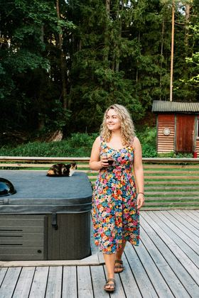
p001 · 01 · a lively city street · a floral midi dress
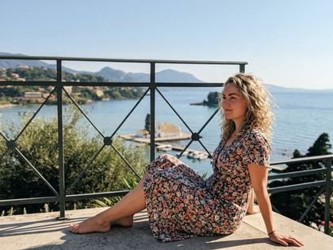
p001 · 02 · a leafy park · a floral midi dress
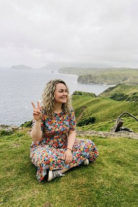
p001 · 03 · a waterfront at golden hour · a floral midi dressp001 · 04 · a cafe terrace · an off-the-shoulder top and jeans · [flirty]p001 · 05 · a sunlit plaza · a floral midi dressp001 · 06 · a quiet side street with character · a floral midi dress
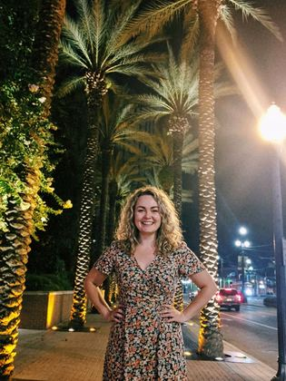
p001 · 07 · a lively city street · a floral midi dressp001 · 08 · a leafy park · a silk camisole top and tailored trousers · [flirty]
p002
a 41 woman, of Ethiopian heritage, a square jaw, deep brown skin, curly dark brown hair, brown eyes, a tall slim frame, a warm friendly face, clear skin · Oslo Norway · temperament: warm · framing: candid · spice ceiling: spicy
p002 · anchorp002 · 01 · a lively city street · a casual top and jeansp002 · 02 · a leafy park · a casual top and jeansp002 · 03 · a waterfront at golden hour · a casual top and jeansp002 · 04 · a cafe terrace · a fitted summer dress with a low back · [flirty]p002 · 05 · a sunlit plaza · a casual top and jeansp002 · 06 · a quiet side street with character · a casual top and jeansp002 · 07 · a lively city street · a casual top and jeansp002 · 08 · a leafy park · a cropped knit top and high-waisted jeans · [flirty]
p003
a 32 woman, of Moroccan heritage, high cheekbones, golden-toned skin, long wavy black hair, brown eyes, a slim build, a warm friendly face · Lisbon Portugal · temperament: warm · framing: candid · spice ceiling: spicy
p003 · background sheet · per-shot background referencep003 · invented scenes · 2 AI-generated background(s), no real reference photo
p003 · anchorp003 · 01 · a lively city street · a cardigan and topp003 · 02 · a leafy park · a cardigan and topp003 · 03 · a waterfront at golden hour · athletic leggings and a fitted sports top · [flirty]p003 · 04 · a cafe terrace · a cardigan and topp003 · 05 · a sunlit plaza · a cardigan and topp003 · 06 · a quiet side street with character · a cardigan and topp003 · 07 · a lively city street · a cardigan and topp003 · 08 · a leafy park · an off-the-shoulder top and jeans · [flirty]
p004
a 43 woman, of Japanese heritage, a long face with a pointed chin, fair skin, shoulder-length jet black hair, deep-set dark eyes, a tall slim frame, a small nose · Prague Czechia · temperament: warm · framing: candid · spice ceiling: spicy
p004 · background sheet · per-shot background referencep004 · invented scenes · 2 AI-generated background(s), no real reference photo
p004 · anchorp004 · 01 · a lively city street · a cardigan and topp004 · 02 · a leafy park · a cardigan and topp004 · 03 · a waterfront at golden hour · a fitted little black going-out dress · [flirty]p004 · 04 · a cafe terrace · a cardigan and topp004 · 05 · a sunlit plaza · a cardigan and topp004 · 06 · a quiet side street with character · a cardigan and topp004 · 07 · a lively city street · a cardigan and topp004 · 08 · a leafy park · a silk camisole top and tailored trousers · [flirty]
p005
a 32 woman, of Italian heritage, a heart-shaped face, light olive skin, long wavy black hair, brown eyes, an athletic build, a warm friendly face, dimples in both cheeks · Berlin Germany · temperament: expressive · framing: candid · spice ceiling: spicy
p005 · background sheet · per-shot background referencep005 · invented scenes · 2 AI-generated background(s), no real reference photo
p005 · anchorp005 · 01 · a lively city street · a button-up shirt and trousersp005 · 02 · a leafy park · a button-up shirt and trousers
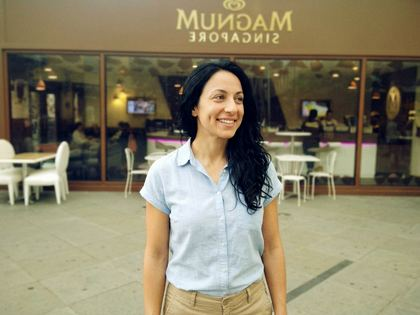
p005 · 03 · a waterfront at golden hour · a button-up shirt and trousers
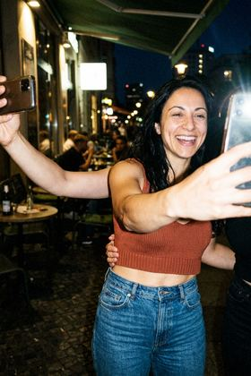
p005 · 04 · a cafe terrace · a cropped knit top and high-waisted jeans · [flirty]p005 · 05 · a sunlit plaza · a button-up shirt and trousersp005 · 06 · a quiet side street with character · a button-up shirt and trousersp005 · 07 · a lively city street · a button-up shirt and trousersp005 · 08 · a leafy park · a wrap dress that fits close · [flirty]
p006
a 24 woman, of Moroccan heritage, soft delicate features, olive skin, a blunt fringe and long dark brown hair, green eyes, a heavyset figure with a wide waist and full hips, a beauty mark on the left cheek · Stockholm Sweden · temperament: warm · framing: candid · spice ceiling: spicy
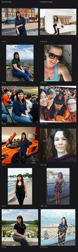
p006 · background sheet · per-shot background referencep006 · invented scenes · 2 AI-generated background(s), no real reference photo
p006 · anchor
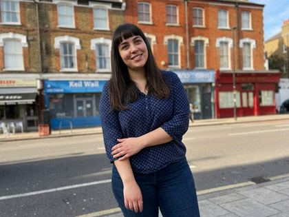
p006 · 01 · a lively city street · a blouse and jeans
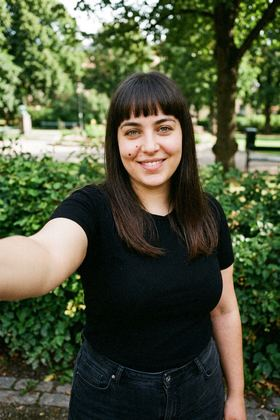
p006 · 02 · a leafy park · a blouse and jeansp006 · 03 · a waterfront at golden hour · a cropped knit top and high-waisted jeans · [flirty]
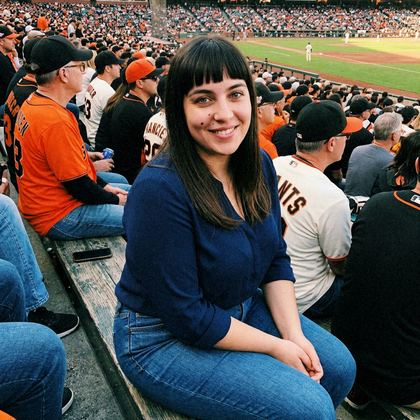
p006 · 04 · a cafe terrace · a blouse and jeansp006 · 05 · a sunlit plaza · a blouse and jeans
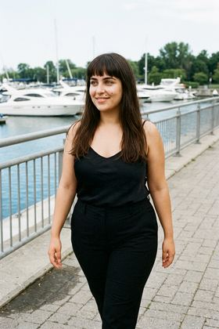
p006 · 06 · a quiet side street with character · a silk camisole top and tailored trousers · [flirty]p006 · 07 · a lively city street · a blouse and jeansp006 · 08 · a leafy park · a blouse and jeans
p007
a 43 woman, of Brazilian heritage, soft delicate features, olive skin, long chestnut hair, hazel eyes, a lean dancer's build, a small birthmark on the right side of the neck · Prague Czechia · temperament: expressive · framing: candid · spice ceiling: spicy
p007 · background sheet · per-shot background referencep007 · invented scenes · 2 AI-generated background(s), no real reference photo
p007 · anchorp007 · 01 · a lively city street · a leather jacket over a teep007 · 02 · a leafy park · a fitted little black going-out dress · [flirty]p007 · 03 · a waterfront at golden hour · a leather jacket over a tee
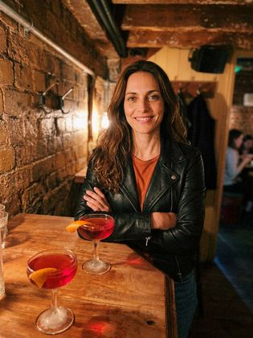
p007 · 04 · a cafe terrace · a leather jacket over a teep007 · 05 · a sunlit plaza · an off-the-shoulder top and jeans · [flirty]p007 · 06 · a quiet side street with character · a leather jacket over a teep007 · 07 · a lively city street · a leather jacket over a teep007 · 08 · a leafy park · a leather jacket over a tee
p008
a 37 woman, of Polish heritage, an oval face, warm beige skin, pinned-up auburn hair, light brown eyes, a curvy figure, arched eyebrows, a gap between the front teeth · Milan Italy · temperament: expressive · framing: candid · spice ceiling: spicy
p008 · background sheet · per-shot background referencep008 · invented scenes · 2 AI-generated background(s), no real reference photo
p008 · anchorp008 · 01 · a lively city street · a striped top and jeansp008 · 02 · a leafy park · a striped top and jeans
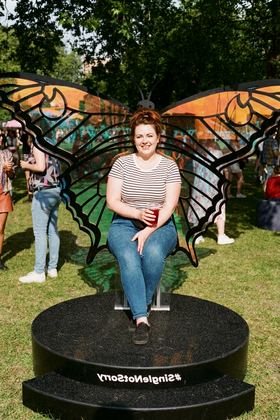
p008 · 03 · a waterfront at golden hour · a striped top and jeansp008 · 04 · a cafe terrace · a silk camisole top and tailored trousers · [flirty]p008 · 05 · a sunlit plaza · a striped top and jeansp008 · 06 · a quiet side street with character · a striped top and jeans
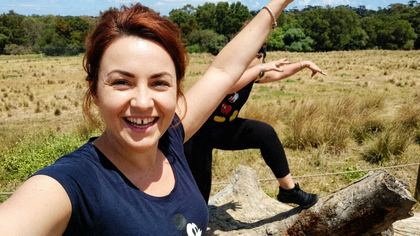
p008 · 07 · a lively city street · athletic leggings and a fitted sports top · [flirty]
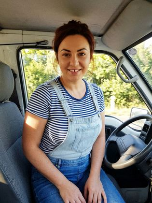
p008 · 08 · a leafy park · a striped top and jeans
p009
a 25 woman, of Ethiopian heritage, a long narrow face, medium brown skin, long straight jet black hair, amber eyes, an average build, a beauty mark under the right eye, a beauty mark on the left cheek · Vienna Austria · temperament: reserved · framing: candid · spice ceiling: spicy
p009 · background sheet · per-shot background referencep009 · invented scenes · 1 AI-generated background(s), no real reference photo
p009 · anchorp009 · 01 · a lively city street · a button-up shirt and trousersp009 · 02 · a leafy park · an off-the-shoulder top and jeans · [flirty]p009 · 03 · a waterfront at golden hour · a button-up shirt and trousersp009 · 04 · a cafe terrace · a button-up shirt and trousersp009 · 05 · a sunlit plaza · a button-up shirt and trousersp009 · 06 · a quiet side street with character · a fitted little black going-out dress · [flirty]p009 · 07 · a lively city street · a button-up shirt and trousersp009 · 08 · a leafy park · a button-up shirt and trousers
p010
a 35 woman, of Italian heritage, a wide square face, tanned skin, pinned-up black hair, dark brown eyes, a soft rounded figure, a beauty mark on the left cheek · Dublin Ireland · temperament: reserved · framing: candid · spice ceiling: spicy
p010 · background sheet · per-shot background referencep010 · invented scenes · 2 AI-generated background(s), no real reference photo
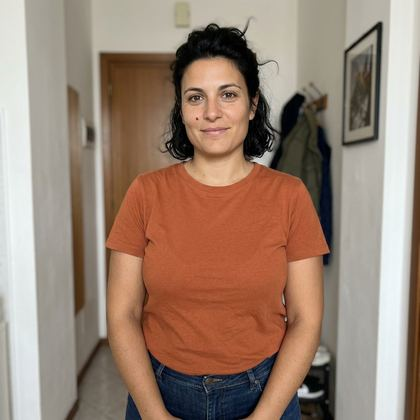
p010 · anchorp010 · 01 · a lively city street · a cardigan and topp010 · 02 · a leafy park · a cardigan and topp010 · 03 · a waterfront at golden hour · a fitted little black going-out dress · [flirty]p010 · 04 · a cafe terrace · a cardigan and topp010 · 05 · a sunlit plaza · a cardigan and topp010 · 06 · a quiet side street with character · a cardigan and top
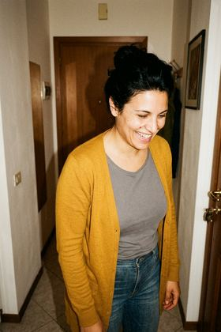
p010 · 07 · a lively city street · a cardigan and top
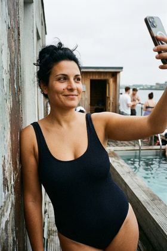
p010 · 08 · a sauna terrace by the water · a one-piece swimsuit by the pool · [spicy]
p011
a 31 woman, of Polish heritage, a round face with full cheeks, light olive skin, curly dark blonde hair, hazel eyes, a broad-shouldered frame, a small nose · Barcelona Spain · temperament: expressive · framing: candid · spice ceiling: spicy
p011 · anchorp011 · 01 · a lively city street · a striped top and jeansp011 · 02 · a leafy park · a striped top and jeans
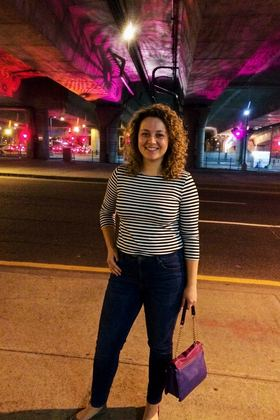
p011 · 03 · a waterfront at golden hour · a striped top and jeansp011 · 04 · a cafe terrace · a striped top and jeansp011 · 05 · a sunlit plaza · athletic leggings and a fitted sports top · [flirty]
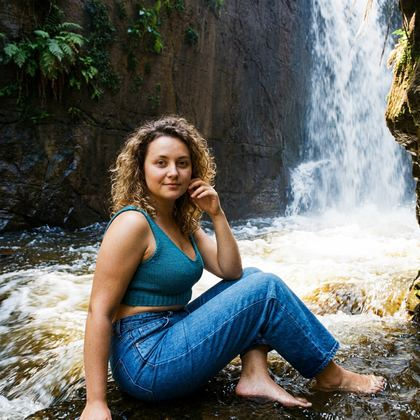
p011 · 06 · a quiet side street with character · a cropped knit top and high-waisted jeans · [flirty]p011 · 07 · a lively city street · a striped top and jeans
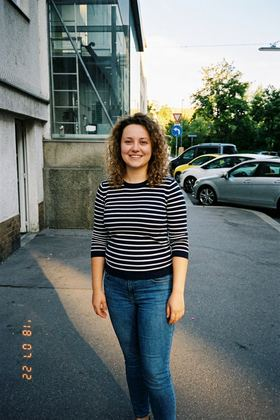
p011 · 08 · a leafy park · a striped top and jeans
p012
a 25 woman, of Norwegian heritage, a wide square face, cool porcelain skin, shoulder-length wavy blonde hair, hazel eyes, a willowy lean frame, deep-set eyes, a beauty mark on the right cheek · Stockholm Sweden · temperament: warm · framing: candid · spice ceiling: spicy
p012 · background sheet · per-shot background referencep012 · invented scenes · 1 AI-generated background(s), no real reference photo
p012 · anchor
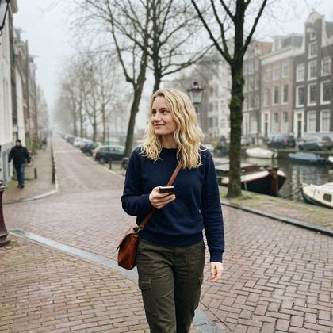
p012 · 01 · a lively city street · a sweatshirt and cargo trousers
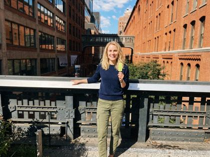
p012 · 02 · a leafy park · a sweatshirt and cargo trousers
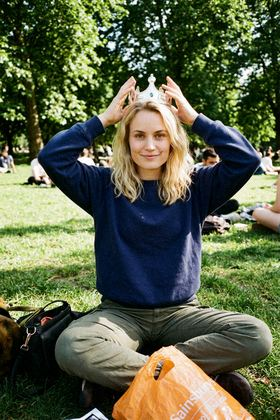
p012 · 03 · a waterfront at golden hour · a sweatshirt and cargo trousersp012 · 04 · a cafe terrace · a wrap dress that fits close · [flirty]p012 · 05 · a sunlit plaza · a sweatshirt and cargo trousers
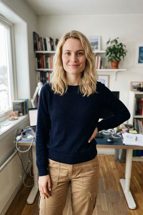
p012 · 06 · a quiet side street with character · a sweatshirt and cargo trousersp012 · 07 · a lively city street · a sweatshirt and cargo trousers
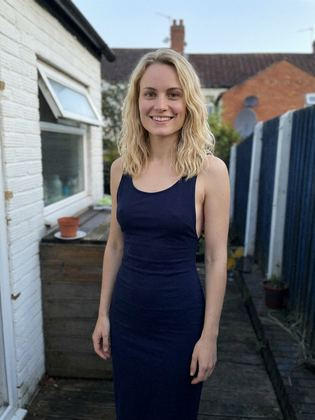
p012 · 08 · a leafy park · a fitted summer dress with a low back · [flirty]
p013
a 30 woman, of Italian heritage, strong angular features, golden-toned skin, a blunt fringe and long black hair, hazel eyes, a full figure, a tiny mole above the right eyebrow, arched eyebrows · Amsterdam Netherlands · temperament: warm · framing: candid · spice ceiling: spicy
p013 · background sheet · per-shot background referencep013 · invented scenes · 2 AI-generated background(s), no real reference photo
p013 · anchorp013 · 01 · a lively city street · a t-shirt and skirtp013 · 02 · a leafy park · a t-shirt and skirtp013 · 03 · a waterfront at golden hour · a t-shirt and skirtp013 · 04 · a cafe terrace · an off-the-shoulder top and jeans · [flirty]p013 · 05 · a lakeside jetty in summer · a cropped gym top and shorts · [spicy]p013 · 06 · a quiet side street with character · a t-shirt and skirtp013 · 07 · a lively city street · a t-shirt and skirtp013 · 08 · a leafy park · a t-shirt and skirt
p014
a 45 woman, of Polish heritage, a broad face, pale skin, long light brown hair, green eyes, a short curvy frame, a small mole above the right corner of the mouth · Barcelona Spain · temperament: expressive · framing: candid · spice ceiling: spicy
p014 · anchorp014 · 01 · a lively city street · a striped top and jeansp014 · 02 · a leafy park · a striped top and jeansp014 · 03 · a waterfront at golden hour · a striped top and jeans
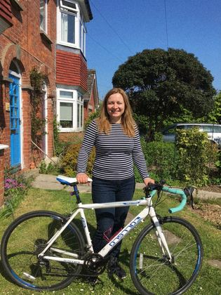
p014 · 04 · a cafe terrace · a striped top and jeansp014 · 05 · a sunlit plaza · a fitted summer dress with a low back · [flirty]
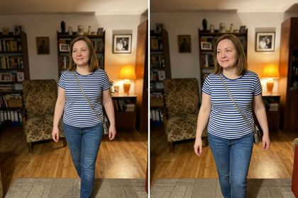
p014 · 06 · a quiet side street with character · a striped top and jeansp014 · 07 · a lively city street · a fitted little black going-out dress · [flirty]p014 · 08 · a leafy park · a striped top and jeans
p015
a 30 woman, of Italian heritage, high cheekbones, olive skin, long reddish brown hair, hazel eyes, a very thin bony frame with narrow shoulders, a beauty mark on the right cheek · Helsinki Finland · temperament: warm · framing: candid · spice ceiling: spicy
p015 · background sheet · per-shot background referencep015 · invented scenes · 2 AI-generated background(s), no real reference photo
p015 · anchorp015 · 01 · a lively city street · a button-up shirt and trousersp015 · 02 · a leafy park · a button-up shirt and trousersp015 · 03 · a waterfront at golden hour · a button-up shirt and trousersp015 · 04 · a cafe terrace · a cropped knit top and high-waisted jeans · [flirty]p015 · 05 · a sunlit plaza · a button-up shirt and trousersp015 · 06 · a quiet side street with character · a button-up shirt and trousersp015 · 07 · a lively city street · a silk camisole top and tailored trousers · [flirty]p015 · 08 · a leafy park · a button-up shirt and trousers
p016
a 44 woman, of Nigerian heritage, a narrow oval face, deep brown skin, shoulder-length wavy black hair, dark brown eyes, an athletic build, a small mole on the left jawline · Helsinki Finland · temperament: expressive · framing: candid · spice ceiling: spicy
p016 · background sheet · per-shot background referencep016 · invented scenes · 2 AI-generated background(s), no real reference photo
p016 · anchor
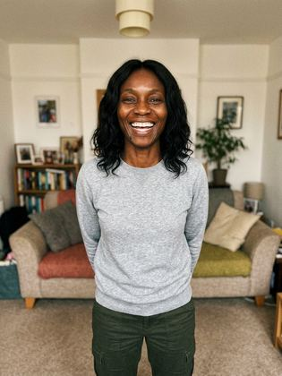
p016 · 01 · a lively city street · a sweatshirt and cargo trousersp016 · 02 · a leafy park · a sweatshirt and cargo trousersp016 · 03 · a waterfront at golden hour · a sweatshirt and cargo trousersp016 · 04 · a cafe terrace · a sweatshirt and cargo trousersp016 · 05 · a sunlit plaza · a sweatshirt and cargo trousersp016 · 06 · a quiet side street with character · an off-the-shoulder top and jeans · [flirty]
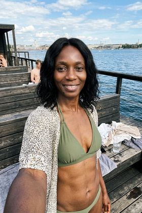
p016 · 07 · a sauna terrace by the water · a beach cover-up over a swimsuit · [spicy]p016 · 08 · a leafy park · a sweatshirt and cargo trousers
p017
a 40 woman, of Polish heritage, a round face with full cheeks, warm beige skin, long ash blonde hair, grey eyes, a willowy lean frame, a small nose · Lisbon Portugal · temperament: warm · framing: candid · spice ceiling: spicy
p017 · invented scenes · 1 AI-generated background(s), no real reference photo
p017 · anchorp017 · 01 · a lively city street · a jumper and jeansp017 · 02 · a leafy park · a jumper and jeansp017 · 03 · a waterfront at golden hour · a cropped knit top and high-waisted jeans · [flirty]p017 · 04 · a cafe terrace · a jumper and jeansp017 · 05 · a sunlit plaza · a fitted little black going-out dress · [flirty]
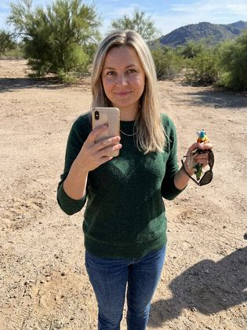
p017 · 06 · a quiet side street with character · a jumper and jeans
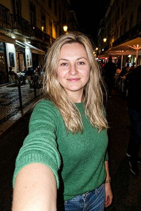
p017 · 07 · a lively city street · a jumper and jeans
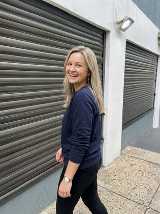
p017 · 08 · a leafy park · a jumper and jeans
p018
a 36 woman, of Brazilian heritage, a round face with full cheeks, golden-toned skin, a short bob chestnut hair, dark brown eyes, a soft dad-bod style figure, freckles scattered over the cheeks, a small mole below the left ear · Stockholm Sweden · temperament: warm · framing: candid · spice ceiling: spicy
p018 · background sheet · per-shot background referencep018 · invented scenes · 2 AI-generated background(s), no real reference photo
p018 · anchorp018 · 01 · a lively city street · a blazer over a teep018 · 02 · a leafy park · a fitted little black going-out dress · [flirty]p018 · 03 · a waterfront at golden hour · a blazer over a teep018 · 04 · a cafe terrace · a blazer over a teep018 · 05 · a sunlit plaza · a blazer over a teep018 · 06 · a quiet side street with character · a wrap dress that fits close · [flirty]p018 · 07 · a lively city street · a blazer over a teep018 · 08 · a leafy park · a blazer over a tee
p019
a 39 woman, of Polish heritage, an oval face, fair skin, curly light brown hair, blue eyes, a petite frame, defined cheekbones · Copenhagen Denmark · temperament: expressive · framing: candid · spice ceiling: spicy
p019 · anchorp019 · 01 · a lively city street · a button-up shirt and trousersp019 · 02 · a leafy park · a button-up shirt and trousersp019 · 03 · a waterfront at golden hour · a button-up shirt and trousersp019 · 04 · a cafe terrace · a button-up shirt and trousersp019 · 05 · a sunlit plaza · a button-up shirt and trousers
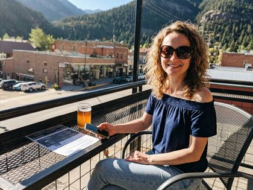
p019 · 06 · a quiet side street with character · an off-the-shoulder top and jeans · [flirty]p019 · 07 · a lively city street · a button-up shirt and trousersp019 · 08 · a leafy park · a fitted little black going-out dress · [flirty]
p020
a 37 woman, of Italian heritage, soft delicate features, light olive skin, shoulder-length reddish brown hair, dark brown eyes, a petite frame, a beauty mark under the right eye · Barcelona Spain · temperament: warm · framing: candid · spice ceiling: spicy
p020 · background sheet · per-shot background referencep020 · invented scenes · 2 AI-generated background(s), no real reference photo
p020 · anchorp020 · 01 · a lively city street · a jumper and jeansp020 · 02 · a leafy park · a jumper and jeansp020 · 03 · a waterfront at golden hour · a jumper and jeansp020 · 04 · a cafe terrace · a silk camisole top and tailored trousers · [flirty]p020 · 05 · a sunlit plaza · a jumper and jeansp020 · 06 · a quiet side street with character · a jumper and jeansp020 · 07 · a lively city street · a jumper and jeansp020 · 08 · a leafy park · a fitted summer dress with a low back · [flirty]
p021
a 45 woman, of Indian heritage, a square jaw, golden-toned skin, curly jet black hair, brown eyes, a pear-shaped figure with wider hips, thick eyebrows · Dublin Ireland · temperament: warm · framing: candid · spice ceiling: spicy
p021 · background sheet · per-shot background referencep021 · invented scenes · 2 AI-generated background(s), no real reference photo
p021 · anchorp021 · 01 · a lively city street · a knit sweaterp021 · 02 · a leafy park · athletic leggings and a fitted sports top · [flirty]
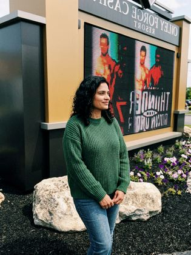
p021 · 03 · a waterfront at golden hour · a knit sweaterp021 · 04 · a cafe terrace · a knit sweaterp021 · 05 · a sunlit plaza · a fitted summer dress with a low back · [flirty]p021 · 06 · a quiet side street with character · a knit sweaterp021 · 07 · a lively city street · a knit sweaterp021 · 08 · a leafy park · a knit sweater
p022
a 23 woman, of Nigerian heritage, a round face with full cheeks, deep brown skin, curly dark brown hair, deep-set dark eyes, a full figure, a small mole above the left corner of the mouth, a strong jawline · Amsterdam Netherlands · temperament: warm · framing: candid · spice ceiling: spicy
p022 · invented scenes · 1 AI-generated background(s), no real reference photo
p022 · anchorp022 · 01 · a lively city street · a summer dressp022 · 02 · a leafy park · a summer dressp022 · 03 · a waterfront at golden hour · a summer dress
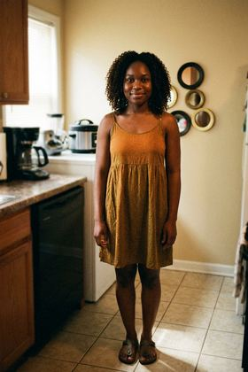
p022 · 04 · a cafe terrace · a summer dressp022 · 05 · a sunlit plaza · a summer dress
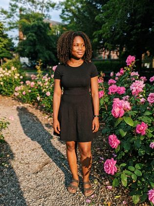
p022 · 06 · a quiet side street with character · a fitted little black going-out dress · [flirty]
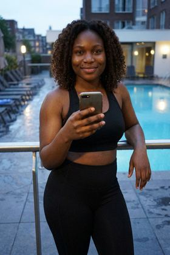
p022 · 07 · a hotel pool · a fitted sports top and leggings after a workout · [spicy]
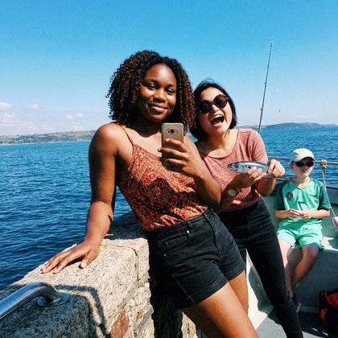
p022 · 08 · a leafy park · a summer dress
p023
a 28 woman, of Norwegian heritage, a long face with a pointed chin, pale skin, long platinum blonde hair, blue eyes, a compact sturdy build, arched eyebrows, a beauty mark on the right cheek · Amsterdam Netherlands · temperament: expressive · framing: candid · spice ceiling: spicy
p023 · background sheet · per-shot background referencep023 · invented scenes · 2 AI-generated background(s), no real reference photo
p023 · anchorp023 · 01 · a lively city street · a turtleneck and jeansp023 · 02 · a leafy park · a turtleneck and jeansp023 · 03 · a waterfront at golden hour · a turtleneck and jeansp023 · 04 · a cafe terrace · a turtleneck and jeansp023 · 05 · a sunlit plaza · a fitted little black going-out dress · [flirty]p023 · 06 · a quiet side street with character · a turtleneck and jeans
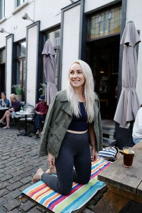
p023 · 07 · a lively city street · athletic leggings and a fitted sports top · [flirty]p023 · 08 · a leafy park · a turtleneck and jeans
p024
a 32 woman, of Norwegian heritage, strong angular features, pale skin, curly dark blonde hair, blue-grey eyes, a slim build, clear skin · Berlin Germany · temperament: warm · framing: candid · spice ceiling: spicy
p024 · 01 · a lively city street · a striped top and jeansp024 · 02 · a leafy park · a striped top and jeansp024 · 03 · a waterfront at golden hour · a striped top and jeansp024 · 04 · a cafe terrace · a cropped knit top and high-waisted jeans · [flirty]p024 · 05 · a sunlit plaza · a striped top and jeansp024 · 06 · a quiet side street with character · a striped top and jeans
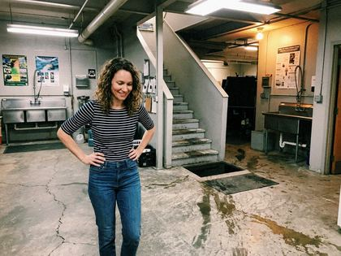
p024 · 07 · a lively city street · a striped top and jeansp024 · 08 · a leafy park · athletic leggings and a fitted sports top · [flirty]
p025
a 26 woman, of Norwegian heritage, an oblong face, ruddy fair skin, a short bob ash blonde hair, green eyes, a lean dancer's build, a gap between the front teeth · Copenhagen Denmark · temperament: warm · framing: candid · spice ceiling: spicy
p025 · background sheet · per-shot background referencep025 · invented scenes · 2 AI-generated background(s), no real reference photo
p025 · anchorp025 · 01 · a lively city street · a wrap dressp025 · 02 · a leafy park · a wrap dressp025 · 03 · a waterfront at golden hour · a wrap dressp025 · 04 · a cafe terrace · a wrap dressp025 · 05 · a sunlit plaza · a wrap dress
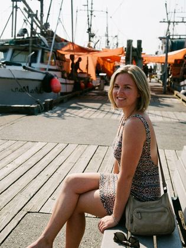
p025 · 06 · a quiet side street with character · a fitted summer dress with a low back · [flirty]p025 · 07 · a lively city street · a wrap dress
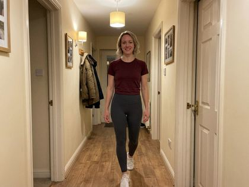
p025 · 08 · a leafy park · athletic leggings and a fitted sports top · [flirty]
p026
a 25 woman, of Brazilian heritage, a round face with full cheeks, olive skin, shoulder-length black hair, brown eyes, a voluptuous hourglass figure, a dimple in the left cheek · Milan Italy · temperament: expressive · framing: candid · spice ceiling: spicy
p026 · background sheet · per-shot background referencep026 · invented scenes · 2 AI-generated background(s), no real reference photo
p026 · anchorp026 · 01 · a lively city street · a leather jacket over a tee
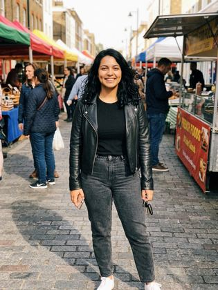
p026 · 02 · a leafy park · a leather jacket over a teep026 · 03 · a waterfront at golden hour · a leather jacket over a teep026 · 04 · a cafe terrace · a leather jacket over a teep026 · 05 · a sunlit plaza · a silk camisole top and tailored trousers · [flirty]p026 · 06 · a lakeside jetty in summer · a beach cover-up over a swimsuit · [spicy]
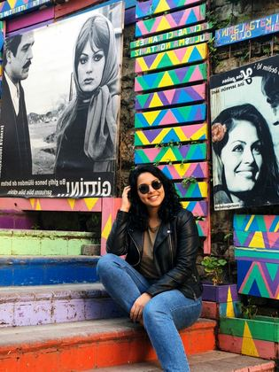
p026 · 07 · a lively city street · a leather jacket over a teep026 · 08 · a leafy park · a leather jacket over a tee
p027
a 45 woman, of Norwegian heritage, a wide forehead and narrow chin, fair skin, tightly coiled blonde hair, blue-grey eyes, a voluptuous hourglass figure, deep-set eyes · Helsinki Finland · temperament: expressive · framing: candid · spice ceiling: spicy
p027 · background sheet · per-shot background referencep027 · invented scenes · 2 AI-generated background(s), no real reference photo
p027 · anchorp027 · 01 · a lively city street · a summer dressp027 · 02 · a leafy park · a summer dressp027 · 03 · a waterfront at golden hour · a summer dressp027 · 04 · a cafe terrace · a summer dressp027 · 05 · a sunlit plaza · a summer dressp027 · 06 · a quiet side street with character · a silk camisole top and tailored trousers · [flirty]p027 · 07 · a lively city street · a fitted summer dress with a low back · [flirty]p027 · 08 · a leafy park · a summer dress
p028
a 24 woman, of Polish heritage, a softly rounded jaw, light olive skin, pinned-up light brown hair, grey eyes, a compact sturdy build, a dimple in the left cheek · Lisbon Portugal · temperament: warm · framing: candid · spice ceiling: spicy
p028 · background sheet · per-shot background referencep028 · invented scenes · 1 AI-generated background(s), no real reference photo
p028 · anchorp028 · 01 · a lively city street · a leather jacket over a teep028 · 02 · a leafy park · a leather jacket over a tee
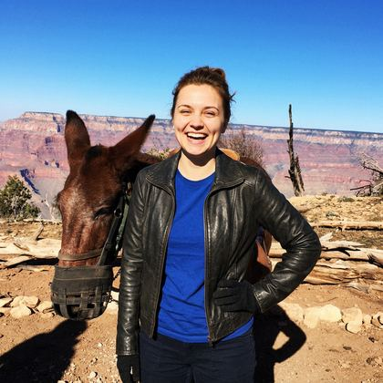
p028 · 03 · a waterfront at golden hour · a leather jacket over a tee
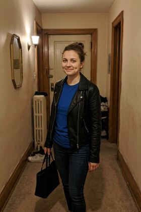
p028 · 04 · a cafe terrace · a leather jacket over a teep028 · 05 · a sunlit plaza · a fitted little black going-out dress · [flirty]p028 · 06 · a quiet side street with character · a leather jacket over a teep028 · 07 · a lively city street · a leather jacket over a teep028 · 08 · a leafy park · a silk camisole top and tailored trousers · [flirty]
p029
a 37 woman, of Moroccan heritage, a heart-shaped face, olive skin, shoulder-length chestnut hair, hazel eyes, a short curvy frame, a cleft chin · Berlin Germany · temperament: warm · framing: candid · spice ceiling: spicy
p029 · background sheet · per-shot background referencep029 · invented scenes · 1 AI-generated background(s), no real reference photo
p029 · anchorp029 · 01 · a lively city street · an oversized sweater and a skirtp029 · 02 · a leafy park · an oversized sweater and a skirtp029 · 03 · a waterfront at golden hour · an oversized sweater and a skirtp029 · 04 · a cafe terrace · an oversized sweater and a skirtp029 · 05 · a sunlit plaza · a wrap dress that fits close · [flirty]p029 · 06 · a quiet side street with character · a fitted little black going-out dress · [flirty]p029 · 07 · a lively city street · an oversized sweater and a skirtp029 · 08 · a leafy park · an oversized sweater and a skirt
p030
a 32 woman, of Thai heritage, fine features, light caramel skin, long straight black hair, brown eyes, a curvy figure, full lips · Oslo Norway · temperament: expressive · framing: candid · spice ceiling: spicy
p030 · background sheet · per-shot background referencep030 · invented scenes · 1 AI-generated background(s), no real reference photo
p030 · anchorp030 · 01 · a lively city street · a button-up shirt and trousersp030 · 02 · a leafy park · a button-up shirt and trousersp030 · 03 · a waterfront at golden hour · a button-up shirt and trousersp030 · 04 · a cafe terrace · a button-up shirt and trousersp030 · 05 · a sunlit plaza · a button-up shirt and trousersp030 · 06 · a quiet side street with character · a cropped knit top and high-waisted jeans · [flirty]p030 · 07 · a lively city street · a fitted summer dress with a low back · [flirty]p030 · 08 · a leafy park · a button-up shirt and trousers
Prev / Next or ← / → to browse · +/− or click the image to zoom, 0 to reset · Esc or click outside to close